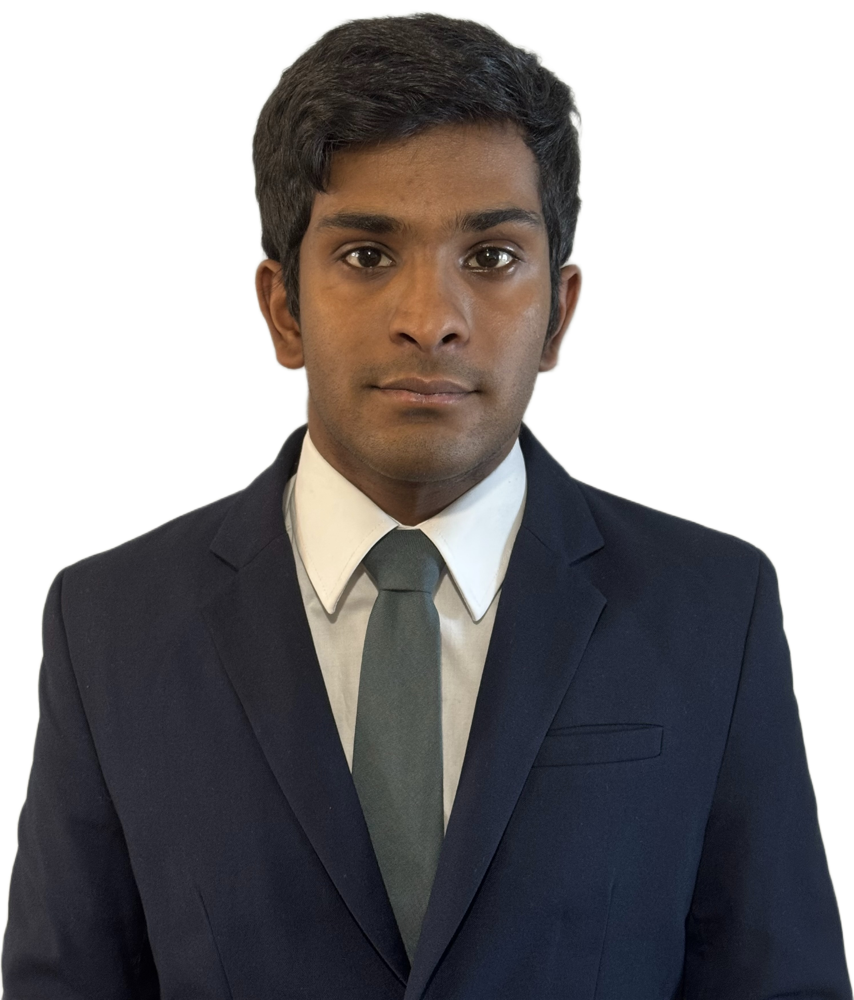

Kurzprofil
Ich bin Visva Loganathan und studiere interdisziplinäre Naturwissenschaften an der ETH Zürich. Meine fachlichen Interessen liegen an der Schnittstelle von Mathematik, Physik und Biologie, insbesondere in der Anwendung mathematischer Methoden auf physikalische und biologische Fragestellungen.
Derzeit bin ich als Teaching Assistant für Mathematik III: Partielle Differentialgleichungen an der ETH Zürich tätig.

Forschung & Interessen
- Analysis (insbesondere komplexe Analysis), Differentialgleichungen & Fractional Calculus
- Nichtlineare Systeme & Chaostheorie
- Mathematische Modellierung in Physik und Biologie
- Evolutionsgenetik & Populationsdynamik
Kontakt
E-Mail: vloganathan@student.ethz.ch